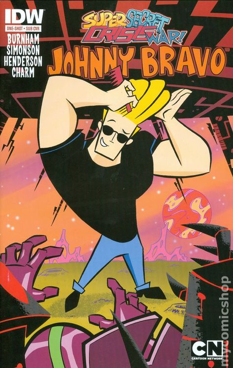
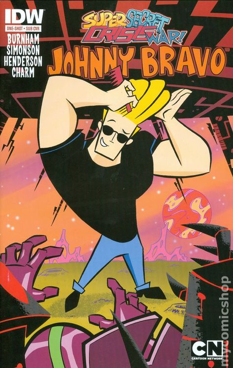
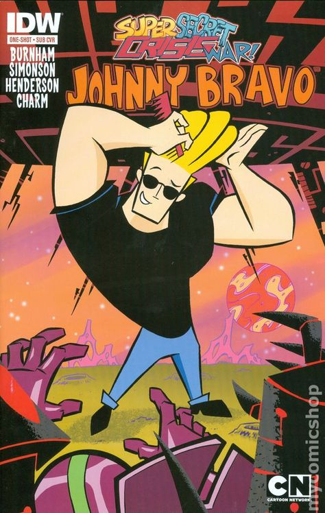

FOTOS DE ALGUNAS DE LAS CARICATURAS
LOS 90s fue una época dorada para las series de dibujos animados. Fueron 10 años de creatividad de todo tipo y para todas las edades
Mirá más 

Entre ellos encontramos a caricaturas como: El laboratorio de Dexter, Ed,Edd & Eddy, Las aventuras de Billy y Mandy, Johnny Bravo, Coraje, el perro cobarde, Tom & Jerry, LOONEY TUNES, La vaca y el Pollito,Scooby Doo, Los Picapiedra, Los Supersonicos.
Mirá másPrimera generacion 1992-2004 Ted Turner es el que lanzo Cartoon, él compro todos las caricaturas. El 1er progragama especial que se repoducio es un capitulo de Droopy. Estos se podian ver solamente en EStados unido. En 1993 llega cartoon a latino america con 24hs de duracion por primera vez en el mundo de canale infantil de dibujos animados, por lo que antes era normal que las caricaturas terminen a las 22hs y luego ya no se reproduciera nada más.
Mirá másEs un canal de televisión por suscripción estadounidense infantil centrado en series de animación para niños y adolescentes. Fue lanzado el 1 de octubre de 1992 por Betty Cohen y es propiedad de The Cartoon Network Inc, subsidiaria de Warner Bros. Discovery Networks, una división de Warner Bros. Discovery. El canal basa su programación en los géneros de acción y comedia, y comparte horario de programación con el canal Adult Swim desde las 8:00 p.m. hasta las 6:00 a. m. (horario de la costa este de los Estados Unidos). Ambos espacios son diferenciados como canales independientes en las estadísticas de audiencia de la empresa Nielsen Holdings para su posterior estudio y análisis. El canal posee una segunda pista de audio en español para determinadas series al aire, la cual puede ser accesible dentro de la misma señal; sin embargo, algunos proveedores de televisión lo ofrecen como un canal aparte al retirar la pista predeterminada de audio en inglés. Para septiembre de 2018, Cartoon Network se encontraba disponible en aproximadamente 80,212 millones de hogares en los Estados Unidos.
LOS 90s fue una época dorada para las series de dibujos animados. Fueron 10 años de creatividad de todo tipo y para todas las edades
Mirá más
